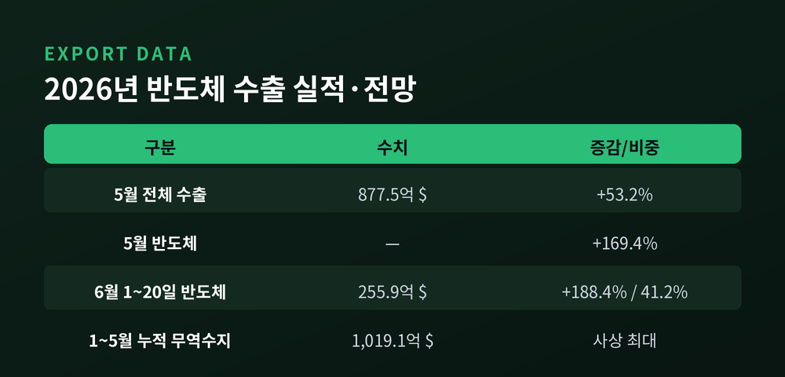
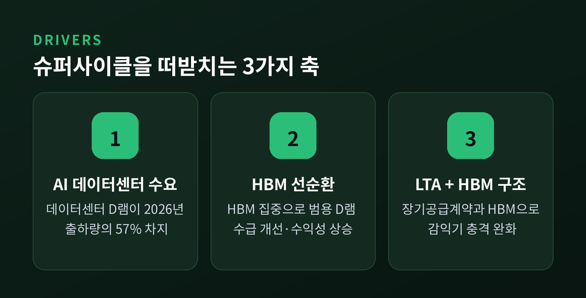
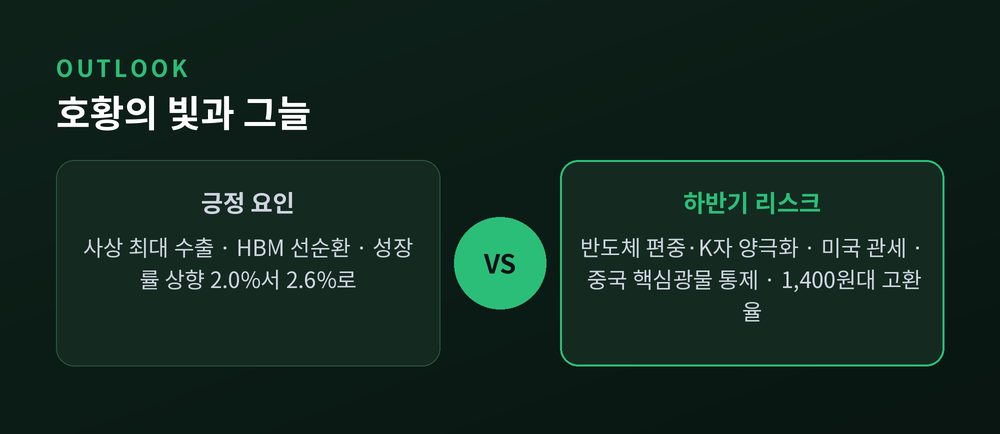

반도체 수출 슈퍼사이클과 2026년 하반기 한국 경제 전망

2026년 한국 경제를 한 단어로 요약하면 '반도체'입니다. 5월 수출이 월 기준 역대 최대를 기록했고, 그 중심에는 메모리와 HBM이 있습니다. 이번 글에서는 반도체 수출 슈퍼사이클이 성장률을 어떻게 끌어올렸는지, 그리고 그 이면의 리스크는 무엇인지 정리해 보겠습니다.
먼저 핵심부터 짚겠습니다. 2026년 5월 한국 수출은 877.5억 달러로 사상 최대였고, 반도체가 전년 동월비 169.4% 늘며 성장을 견인했습니다. 그 덕에 한국은행은 올해 성장률 전망을 2.0%에서 2.6%로 올렸습니다. 다만 이 호황의 온기는 고르게 퍼지지 못하고 있습니다.
사상 최대 수출, 숫자로 보는 반도체의 힘
2026년 5월, 한국 수출은 월 기준 역대 최대를 갈아치웠습니다.
전체 수출액은 877.5억 달러. 전년 동월 대비 53.2% 증가한 수치입니다. 일평균 수출은 사상 처음으로 40억 달러를 넘었고, 3개월 연속 800억 달러를 돌파했습니다.
이 흐름의 한가운데 반도체가 있습니다.
5월 반도체 수출은 전년 동월비 169.4% 늘었습니다. 6월 1~20일 잠정치를 보면 반도체 수출이 188.4% 증가하며 전체 수출의 41.2%를 차지했습니다. 수출 두 건 중 한 건에 가까운 비중입니다.
참고로 일부 집계에서는 5월 반도체 수출 증가율을 202.1%로 제시하기도 합니다. 산업통상부 공식치(169.4%)와 차이가 있어 두 수치를 함께 적어 둡니다. 집계 기준의 차이로 보이나 정확한 원인은 확인되지 않았습니다.

무역수지도 기록을 세웠습니다. 5월 무역수지는 269.5억 달러 흑자, 1~5월 누적으로는 1,019.1억 달러 흑자였습니다. 기존 연간 최대였던 2017년의 952억 달러를 반년 만에 넘어선 사상 최대입니다.
슈퍼사이클을 떠받치는 것 — AI와 HBM
그렇다면 이 호황은 어디서 왔을까요.
출발점은 AI 데이터센터입니다. AI 학습과 추론을 위한 서버 투자가 늘면서, 서버 한 대당 들어가는 D램과 HBM 용량이 계속 커지고 있습니다. 카운터포인트리서치에 따르면 데이터센터 D램 수요가 2026년 D램 출하량의 57%를 차지합니다. 수요의 중심축이 옮겨간 셈입니다.
핵심은 HBM이 만드는 선순환 구조입니다.
HBM에 생산능력이 집중되면 범용 D램 공급이 빠듯해집니다. 그러면 범용 D램의 수급이 개선되고, 가격과 수익성이 함께 오릅니다. SK하이닉스는 이를 'HBM 집중이 범용 메모리 수익성까지 끌어올리는 선순환'으로 설명합니다.

그 결과 6월에는 메모리 전 품목에서 수출액과 단가가 동시에 뛰었습니다. 전자신문은 이를 AI 메모리 슈퍼사이클의 구조적 확대 신호로 해석했습니다. 글로벌 시각도 비슷합니다. BofA는 2026년을 1990년대 호황기와 닮은 슈퍼사이클로 규정했습니다.
한국 기업의 위치도 좋습니다. SK하이닉스는 엔비디아향 HBM 공급에서 앞서 있고, 삼성전자는 차세대 HBM4 양산에 속도를 내고 있습니다. 한국 메모리 산업의 무기는 장기공급계약과 HBM입니다. 이 구조 덕분에 향후 감익기가 와도 과거 같은 극심한 영업이익 급감은 없을 것이라는 분석이 나옵니다.
성장률 전망은 왜 올랐나
수출 호조는 성장률 전망에 직접 반영됐습니다.
한국은행은 2월 2.0%였던 2026년 성장률 전망을 5월 2.6%로 끌어올렸습니다. 상향의 직접적 동인을 한은은 "예상을 크게 웃도는 반도체 수출 호조"라고 밝혔습니다.
기관별로 보면 전망에 편차가 있습니다.
KDI는 시점에 따라 1.9%(2월 수정 전망)에서 2.5% 내외를 제시했고, 한경연은 슈퍼사이클을 반영해 2.7%를 내놨습니다. 종합하면 2026년 성장률 전망은 기관별로 1.9%에서 2.7% 사이입니다. 공통점은 분명합니다. 반도체가 상향의 핵심 동인이라는 점입니다.
한 가지 오해를 짚고 가겠습니다. 분기별로 보면 상반기 3.1%, 하반기 1.9%(전년동기비)로 하반기가 둔화하는 듯 보입니다. 그러나 이는 기저효과 영향입니다. 상반기에 올라온 수준이 유지되는 것이지 경기가 나빠진다는 뜻이 아닙니다.
호황의 그늘 — 체감되지 않는 성장
여기까지는 밝은 이야기였습니다. 이제 아쉬운 면을 봐야 합니다.
가장 자주 지적되는 문제는 '반도체 편중'입니다. 전체 수출에서 반도체 비중이 41.7%로, 1년 전보다 19.0%포인트 커졌습니다. 성장의 반도체 의존도가 그만큼 깊어졌다는 뜻입니다.
문제는 낙수효과가 약하다는 데 있습니다.
반도체는 자본집약도가 높은 산업입니다. 수출이 늘어도 고용과 소득으로의 파급이 제한적입니다. 그래서 통계상 성장률은 오르지만 체감 경기는 냉랭한 괴리가 생깁니다. 반도체와 비반도체, 수출과 내수 사이의 격차가 벌어지는 이른바 'K자형 양극화'입니다.

실제 가계 지표가 이를 보여줍니다. 고물가가 길어지며 실질 구매력이 약해졌고, 소비자 경기 전망은 1년 만에 최저로 내려갔습니다. 상위 20%와 하위 20%의 소득 격차는 2020년 이후 6년 만에 최고 수준입니다. 예전 같으면 수출 호황이 내수로 번졌겠지만, 지금은 그 연결 고리가 헐거워졌습니다.
하반기 리스크도 겹쳐 있습니다. 미국 관세 인상은 수출의 성장 기여도를 다소 낮출 수 있습니다. 중국이 통제하는 텅스텐·희토류 같은 핵심 광물은 첨단산업 공급망에 부담입니다. 환율은 이른바 '1,400원대 뉴노멀' 가능성이 거론됩니다. 고환율은 수출기업 채산성에는 우호적이지만 수입물가와 내수 구매력에는 부담이라 양면적입니다. 현대경제연구원은 건설투자 회복 지연, 고용 없는 성장, 내·외수 양극화, 통화정책 전환, 주식시장 불안정성을 하반기 5대 리스크로 꼽았습니다.
정리하면 이렇습니다.
2026년 한국 경제는 반도체가 만든 기록적 호황 위에 서 있습니다. 동시에 그 성장이 한 산업에 쏠려 있다는 구조적 취약함도 함께 안고 있습니다. 슈퍼사이클은 진짜이지만, 사이클은 언젠가 돌아온다는 신중론도 공존합니다.
"성장률이 오른다고 모두의 살림이 나아지는 것은 아닙니다."
호황의 빛과 그늘을 함께 보아야 하는 이유가 여기에 있다고 생각합니다.
본 글은 정보 제공을 목적으로 하며 특정 종목 추천이나 투자 권유가 아닙니다. 투자 판단은 본인 책임임을 밝혀 둡니다.